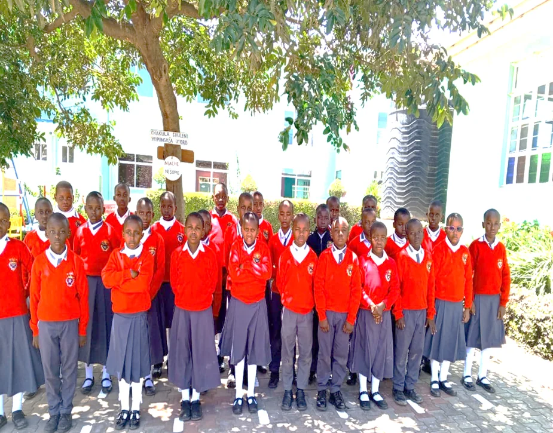

Young learners shine at creative arts day
Music, movement and confidence came together in a joyful performance.
Read story →
A classic, faith-centred school experience where every child is known, challenged and prepared to serve.
Our learning environment brings together strong classroom practice, Catholic identity, creative expression and a caring community.
From the first years of pre-primary to the final stage of primary education, children are guided to become thoughtful learners, kind friends and courageous contributors.
Our story
Playful foundations in language, numeracy, movement and social confidence.
Structured, engaging teaching that builds understanding and independence.
A watchful community that supports wellbeing, dignity and belonging.
Opportunities to discover talent, teamwork, leadership and joy.

Classrooms are designed for participation, practice and thoughtful feedback. The UI uses authentic school photography to keep the experience credible and personal.
View programmesMusic, movement and confidence came together in a joyful performance.
Read story →
The admissions journey is presented clearly: enquire, visit, apply and receive support from the school office.